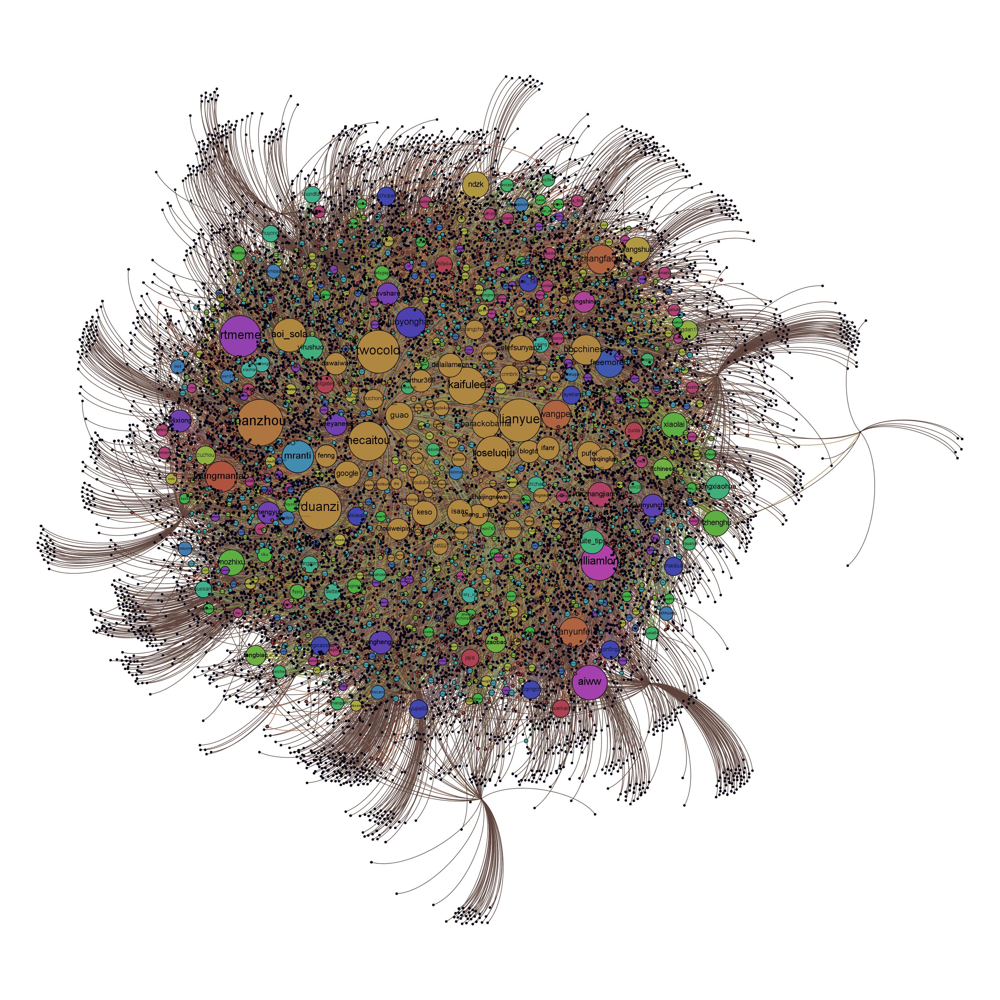
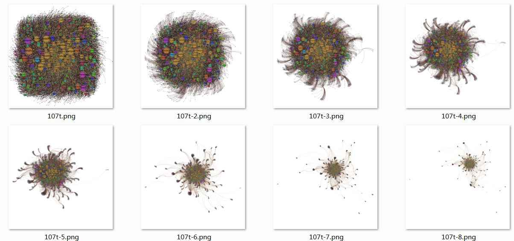

Toggle navigation
ooof 可视化作品集
Home
About
Contact
Dropdown
Action
Another action
Something else here
Nav header
Separated link
One more separated link
 
数据及制作文档
数据来源
采集自推特
原始数据
107t 用户名列表
，
107t 好友数据
整理数据
下载
处理过程文件
未处理 Gephi 文件
，
处理好的 Gephi
完成文件
下载
输出文件
图片
制图说明
数据用 Gabe Sawhney 的程序采集自推特，用 yEd 完成图形，所呈现的是 50 个推特用户之间的跟随关系。
Please enable JavaScript to view the
comments powered by Disqus.
comments powered by
Disqus